Mocks vs TestContainers
Иван Пономарев
|
Почему я решил сделать этот доклад?
Kafka streams testing: A deep dive (Joker 2020, online)
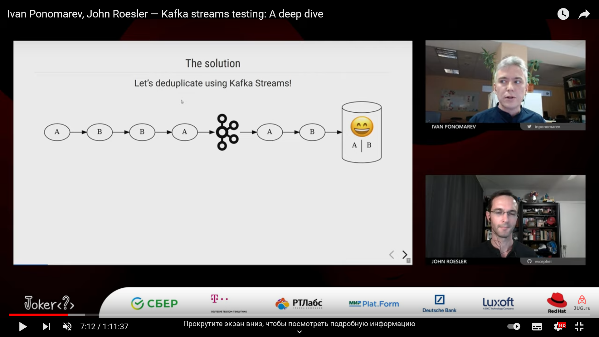
О чём пойдёт речь
Интеграционные тесты
Личный опыт последней пары лет
Современный интеграционный тест
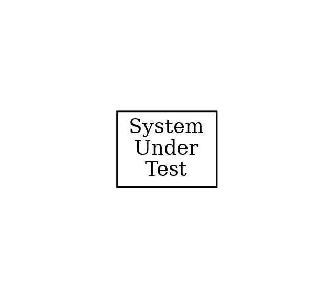
Современный интеграционный тест
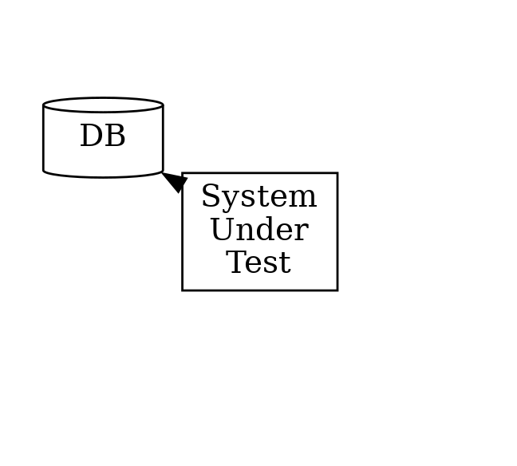
Современный интеграционный тест
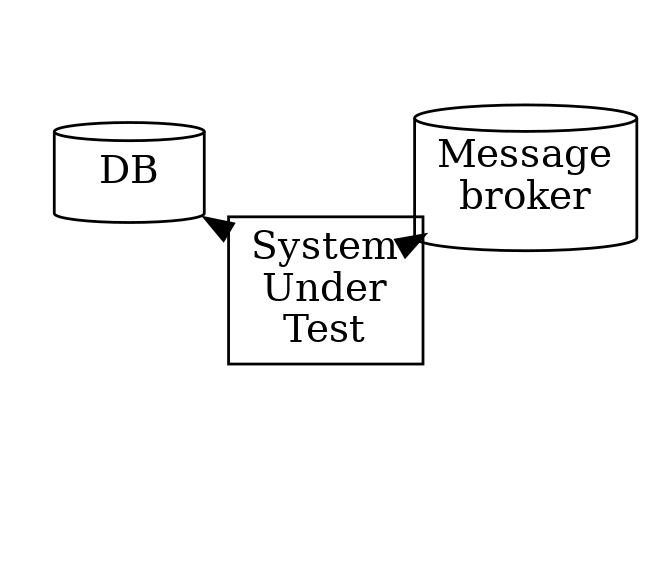
Современный интеграционный тест
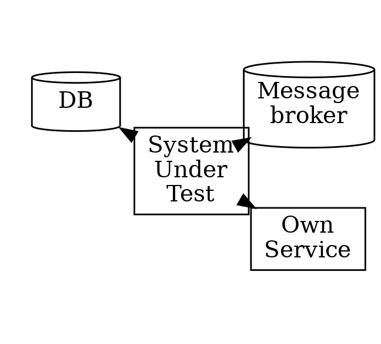
Современный интеграционный тест
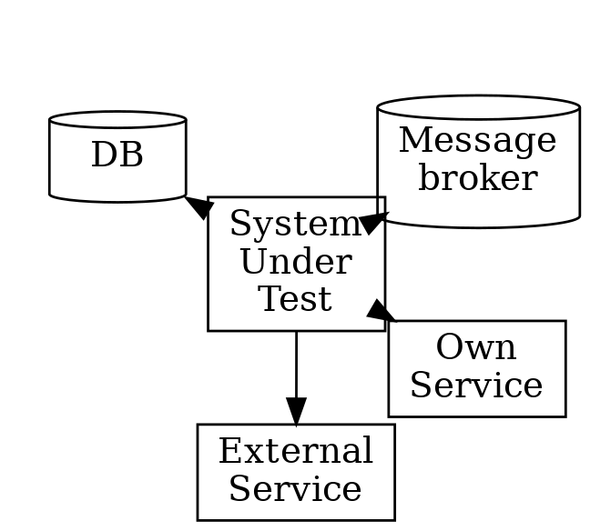
Современный интеграционный тест
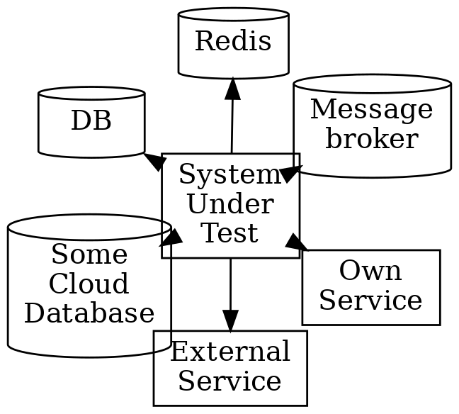
Что у нас есть?
Моки | Реальные системы |
Использовать моки — это как учить химию по мультикам!
То ли дело настоящий эксперимент!
Что у нас есть для настоящих экспериментов?

TestContainers in Action
GenericContainer redis = new GenericContainer(
DockerImageName.parse("redis:5.0.3-alpine"))
.withExposedPorts(6379);
String address = redis.getHost();
Integer port = redis.getFirstMappedPort();
underTest = new RedisBackedCache(address, port);Набор стереотипов
— Моки — это ненадёжно
— Поднимем всё-всё в тестконтейнерах и затестируем!
— Не надо больше использовать H2 для тестирования кода, работающего на базе данных!
— А как внешние сервисы?.. их в тестконтейнерах не поднимешь…
Моки внешних сервисов
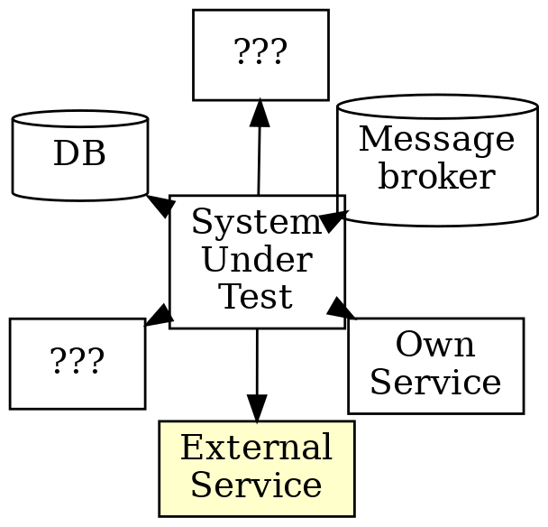
Моки внешних сервисов
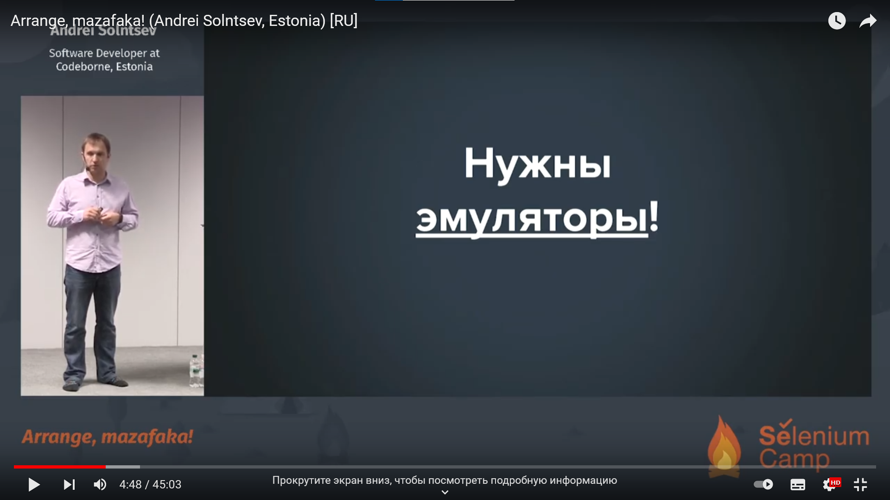
Моки внешних сервисов
Моки | Реальные системы | |
| Мы не контролируем внешний сервис и его работоспособность |
Пример из книги Humans vs. Computers
«Давайте отпустим из тюрем всех, кто не совершал тяжких преступлений»
try {
murders = restClient.loadMurders();
}
catch (IOException e) {
logger.error(“failed to load”, e);
murders = emptyList();
}WireMock может
имитировать ответ от сервиса на запрос
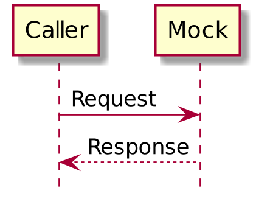
WireMock может
верифицировать произведённые вызовы
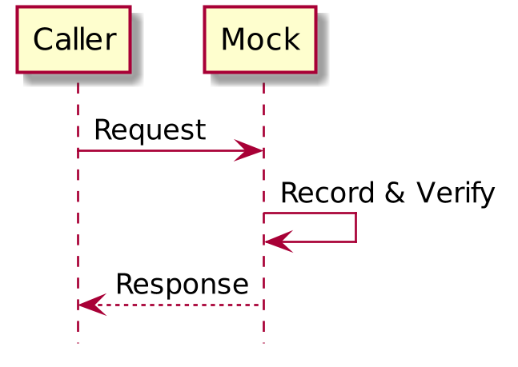
WireMock может
«шпионить», перехватывая вызовы к настоящему сервису
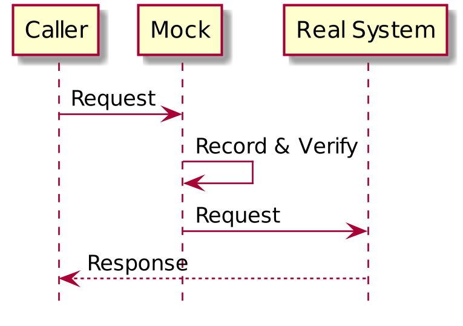
Как быть с RDBMS/NoSQL/Message brokers и иными?
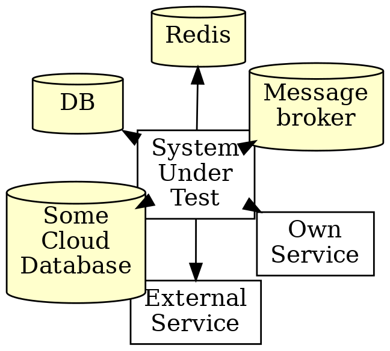
Как быть с RDBMS/NoSQL/Message brokers и иными?
— Это слишком сложно, чтобы мокировать!
— Ура, контейнеры!
Mocks vs TestContainers: функциональность
Mocks | Testcontainers | |
|
Mocks vs TestContainers: функциональность
Mocks | Testcontainers | |
|
|
Mocks vs TestContainers: простота и скорость запуска
Mocks | Testcontainers | |
|
Mocks vs TestContainers: простота и скорость запуска
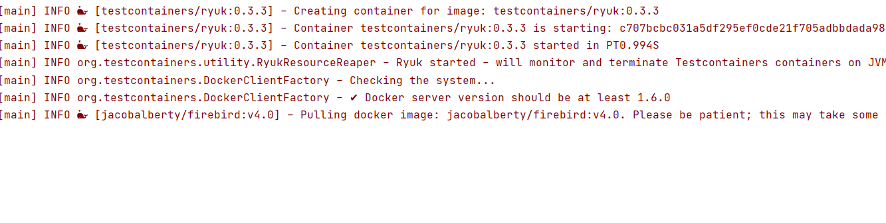
Mocks vs TestContainers: простота и скорость запуска
Mocks | Testcontainers | |
|
|
TC Startup time
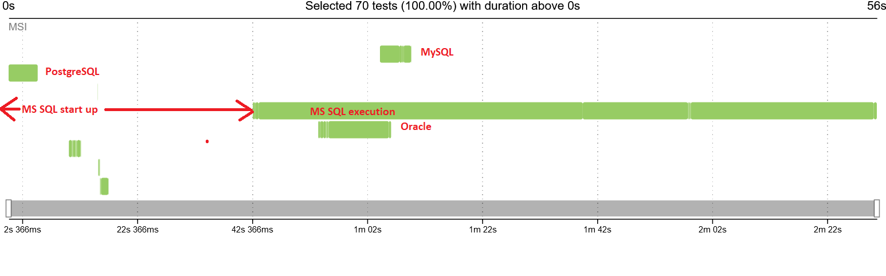
Ничего не поделаешь, если
«У меня Mac M1!»
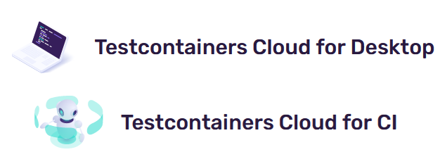
Удобство
Mocks | Testcontainers | |
| «Страшные» тесты некогда ждать и отлаживать, хочется их скипнуть |
Integration Mocks vs TestContainers
Mocks | Testcontainers | |
|
Integration Mocks vs TestContainers
Mocks | Testcontainers | |
|
|
Наличие
Mocks | Testcontainers | |
Иногда они есть, но чаще всего их нет. |
|
Пример № 1. JedisMock и верификация вызовов
переимплементация Redis на Java (работает на уровне сетевого протокола)
//This binds mock redis server to a random port
RedisServer server = RedisServer
.newRedisServer()
.start();
//Jedis connection:
Jedis jedis = new Jedis(server.getHost(), server.getBindPort());JedisMock
Тестируется Comparison-тестами (прогон одинаковых сценариев на Jedis-Mock и на контейнеризованном Redis)
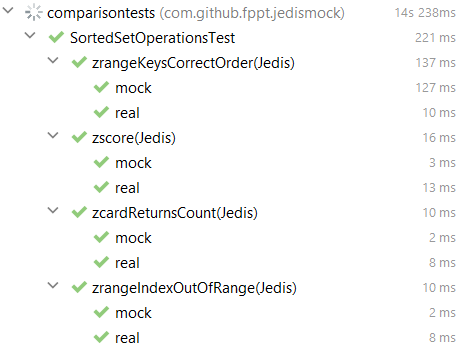
JedisMock
По состоянию на июнь 2022, поддерживает 103 из 225 команд (46%)
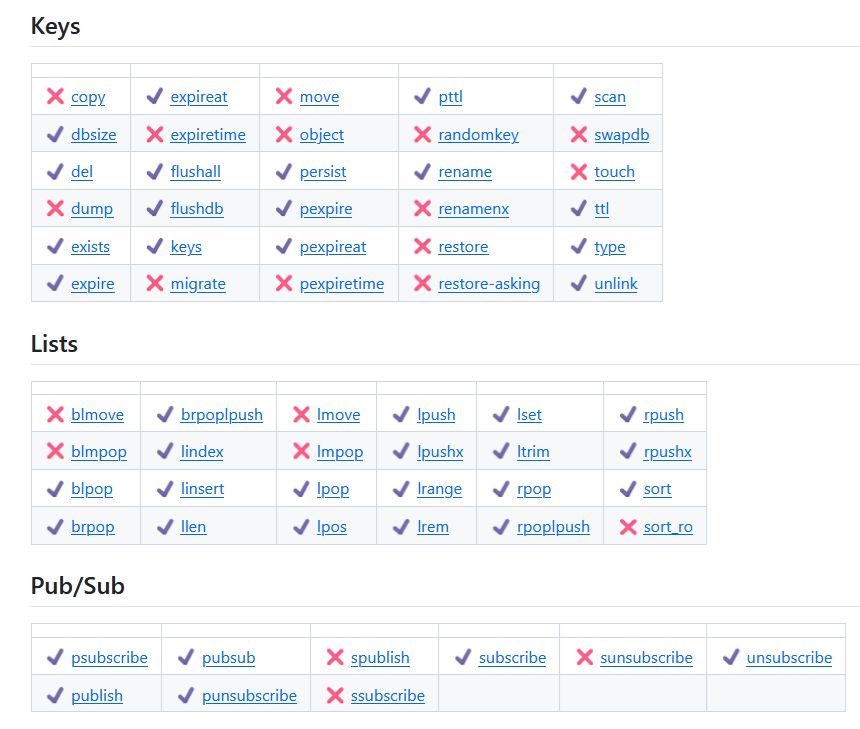
JedisMock
Постоянно латаются ошибки (поведение, отличающиеся от настоящего Redis)
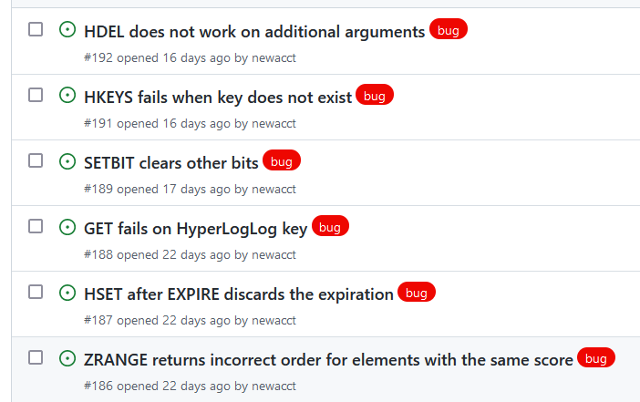
Зачем нужен JedisMock
Обычная Maven зависимость
//This binds mock redis server to a random port
RedisServer server = RedisServer
.newRedisServer()
.start();
//Jedis connection:
Jedis jedis = new Jedis(server.getHost(), server.getBindPort());RedisCommandInterceptor
RedisServer server = RedisServer.newRedisServer()
.setOptions(ServiceOptions.withInterceptor((state, cmd, params) -> {
if ("get".equalsIgnoreCase(cmd)) {
//явно прописываем ответ
return Response.bulkString(Slice.create("MOCK_VALUE"));
} else {
//делегируем в мок
return MockExecutor.proceed(state, cmd, params);
}
})).start();RedisCommandInterceptor
RedisServer server = RedisServer.newRedisServer()
.setOptions(ServiceOptions.withInterceptor((state, cmd, params) -> {
if ("echo".equalsIgnoreCase(cmd)) {
//проверяем запрос
assertEquals("hello", params.get(0).toString());
}
//делегируем в мок
return MockExecutor.proceed(state, cmd, params);
})).start();RedisCommandInterceptor
RedisServer server = RedisServer.newRedisServer()
.setOptions(ServiceOptions.withInterceptor((state, cmd, params) -> {
if ("echo".equalsIgnoreCase(cmd)) {
//имитируем сбой
return MockExecutor.breakConnection(state);
} else {
//делегируем в мок
return MockExecutor.proceed(state, cmd, params);
}
})).start();Работа как Test Proxy
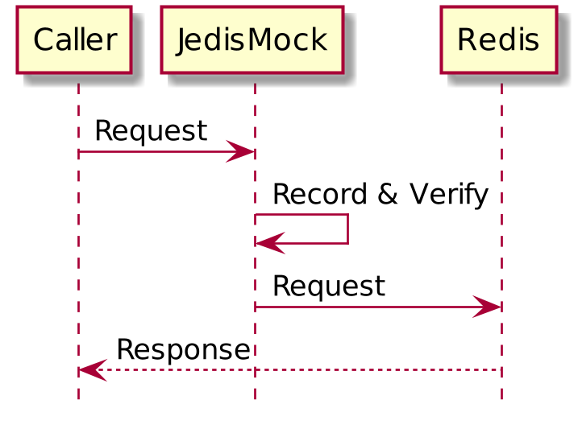
Выводы по Jedis-Mock
Для большинства задач тестирования Redis TestContainers работает.
Но если вы желаете верифицировать поведение собственной системы или изучать её в ситуации, когда сбоит сам Redis — JedisMock в помощь.
Пример №2. Kafka Streams TopologyTestDriver и ад асинхронного тестирования
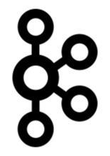 | 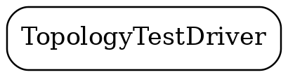 |
Kafka streams testing: A deep dive (Joker 2020, online)
TopologyTestDriver
 Простой (обычная зависимость)
Простой (обычная зависимость)- Быстрый
- Удобный (хороший API для Arrange и Assert)
Главное отличие:
TopologyTestDriver | Real Kafka | |
Работает синхронно (один поток и event loop, как в браузере) | Работает асинхронно во многих тредах на многих контейнерах |
Мысленный эксперимент: ограниченность асинхронных тестов
Мы ввели "ping" и ожидаем, что система вернёт нам единственный ответ "pong".
2 секунды. Нет ответа.
3 секунды. Нет ответа.
4 секунды. "pong". Расходимся?
5 секунд. Тишина.
6 секунд. Тишина.
7 секунд. "boom!"
Проблема с поллингом
//5 seconds?? maybe 6? maybe 4?
while (!(records = consumer.poll(Duration.ofSeconds(5))).isEmpty()) {
for (ConsumerRecord<String, String> rec : records) {
values.add(rec.value());
}
}Фундаментальная проблема: это финальный результат или мы недостаточно долго ждали?
Awaitility: частичное решение проблемы с асинхронным тестом
Awaitility.await().atMost(10, SECONDS).until(() ->
{ // returns true
});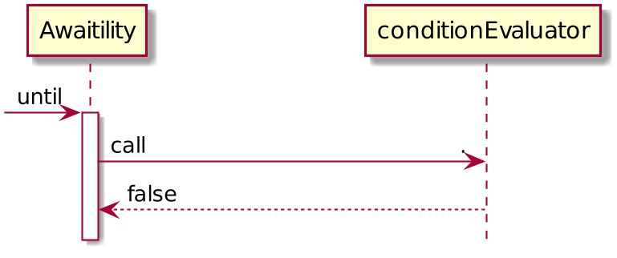
Awaitility: частичное решение проблемы с асинхронным тестом
Awaitility.await().atMost(10, SECONDS).until(() ->
{ // returns true
});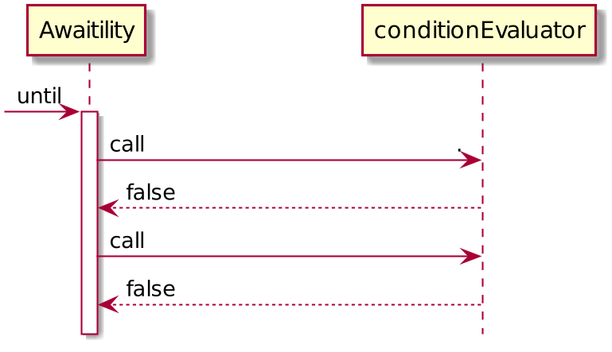
Awaitility: частичное решение проблемы с асинхронным тестом
Awaitility.await().atMost(10, SECONDS).until(() ->
{ // returns true
});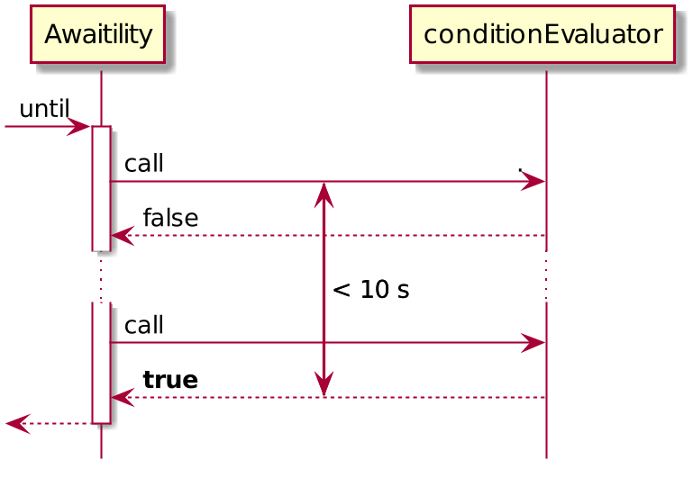
Awaitility: падение теста
Awaitility.await().atMost(10, SECONDS).until(()->
{ // returns false for more than 10 seconds
});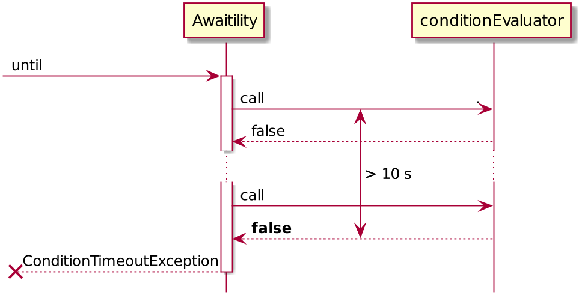
Возможности Awaitility DSL
atLeast(не должно произойти раньше)atMost(не должно произойти позже)during(должно происходить на протяжении интервала)период опроса:
постоянный (1, 2, 3, 4…)
Фибоначчи (1, 2, 3, 5…)
экспоненциальный (1, 2, 4, 8…)
Awaitility ускоряет асинхронные тесты, но не преодолевает фундаментальную проблему асинхронных тестов
Ничего не напоминает?
Selenium
WebDriverWaitSelenide’s implicit wait
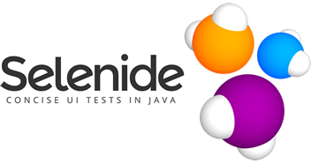
Проблемы Awaitility
Гарантий нет ⇒ Flakiness
Мы вступаем на скользкую тропку concurrent Java programming
Настоящий тест с Awaitility: часть 1
List<String> actual = new CopyOnWriteArrayList<>();
ExecutorService service = Executors.newSingleThreadExecutor();
Future<?> consumingTask = service.submit(() -> {
while (!Thread.currentThread().isInterrupted()) {
ConsumerRecords<String, String> records =
consumer.poll(Duration.ofMillis(100));
for (ConsumerRecord<String, String> rec : records) {
actual.add(rec.value());
}}});Настоящий тест с Awaitility: часть 2
try {
Awaitility.await().atMost(5, SECONDS)
.until(() -> List.of("A", "B").equals(actual));
} finally {
consumingTask.cancel(true);
service.awaitTermination(200, MILLISECONDS);
}Тест с TopologyTestDriver
List<String> values = outputTopic.readValuesToList();
Assertions.assertEquals(List.of("A", "B"), values);В чём же подвох??
синхронный характер и отсутствие кэширования ⇒ разное поведение
можно построить простые примеры кода, дающего «зелёный» тест на TTD, но работающего абсолютно некорректно на реальном кластере
Выводы по KafkaStreams:
Вам всё равно не обойтись без помощи TopologyTestDriver
Но надо понимать ограничения этой технологии, аспекты, в которых она не работает так же, как и реальный кластер
Падение на TTD означает что код плох. Удачное выполнение на TTD не означает, что код хорош.
При необходимости, небольшое количество тестов производится на контейнеризованном кластере.
История №3. Apache Beam: мок как один из поддерживаемых бэкендов
Apache Beam is a unified programming model to define and execute data processing pipelines, including ETL, batch and stream (continuous) processing.
SDKs: Java, Python, Go
Apache Beam Runners
| 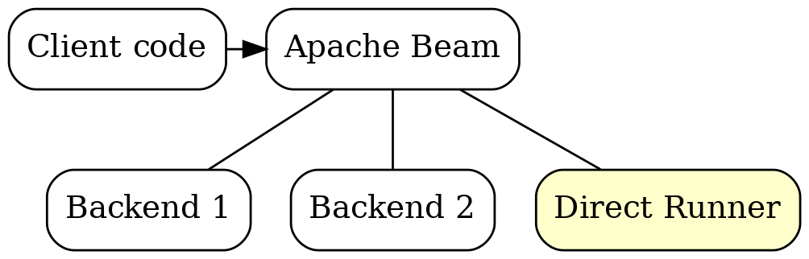
|
Паттерн: Mock Backend
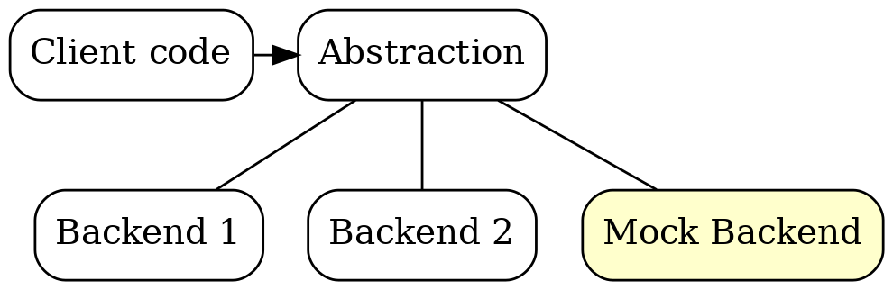
Множества функциональных возможностей
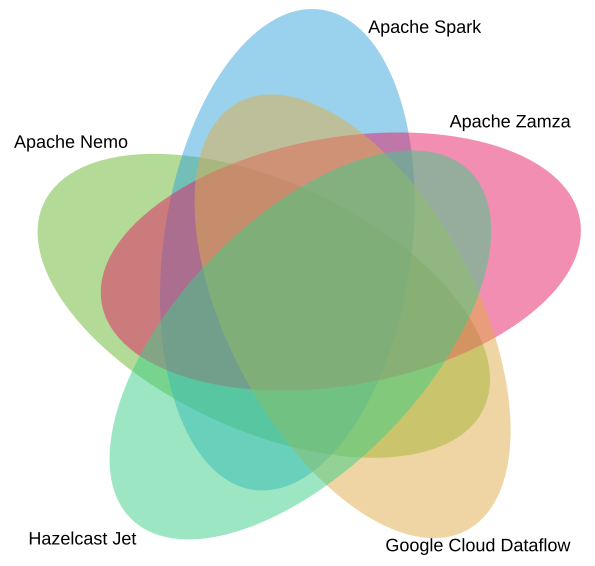 |
Матрица поддерживаемых возможностей (фрагмент)
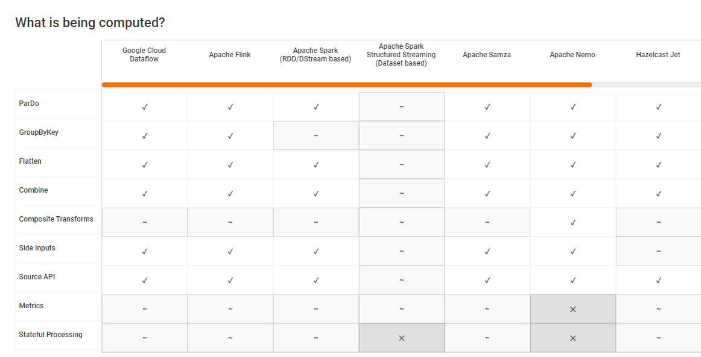 |
Direct Runner
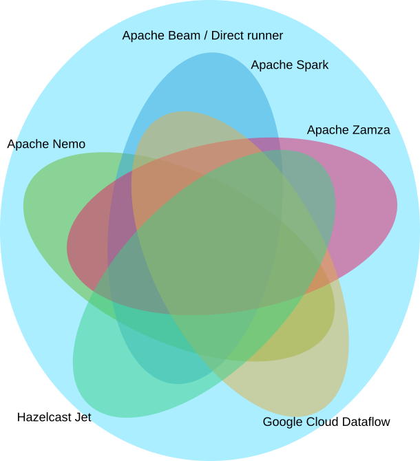 | "Direct Runner performs additional checks to ensure that users do not rely on semantics that are not guaranteed by the model… Using the Direct Runner helps ensure that pipelines are robust across different Beam runners." |
Apache Beam’s Direct Runner
Падение на Direct Runner означает что код плох.
Удачное выполнение на Direct Runner не означает, что код хорош.
Как затестировать Google Cloud Dataflow без Google Cloud — мне неведомо.
Пример №4. Celesta: не спешим отказываться от H2
|
Celesta
|
Celesta
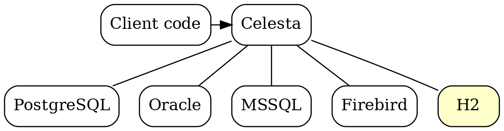
Celesta
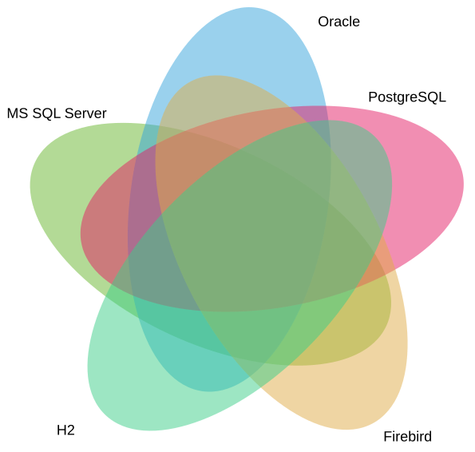 |
|
Celesta
 |
|
Celesta Comparison Tests

Celesta
Работает на H2 ⇒ будет работать на PostgreSQL, MS SQL, etc..
Celesta
Работает на H2 ⇒ будет работать на PostgreSQL, MS SQL, etc..
Mock Backend здорового человека!
Возможности in-memory H2
- Стартует с пустой базой моментально
- Мигрируется моментально
- Поступающие запросы трассируются элементарно
(SET TRACE_LEVEL_SYSTEM_OUT 2) - После теста состояние «забывается»
CelestaTest: Arrange
@CelestaTest
class OrderDaoTest {
OrderDao orderDao = new OrderDao();
CustomerCursor customer;
ItemCursor item;CelestaTest: Arrange
@CelestaTest
class OrderDaoTest {
OrderDao orderDao = new OrderDao();
CustomerCursor customer;
ItemCursor item;
@BeforeEach
void setUp(CallContext ctx) {
customer = new CustomerCursor(ctx);
customer.setName("John Doe")
.setEmail("john@example.com").insert();
item = new ItemCursor(ctx);
item.setId("12345")
.setName("cheese").setDefaultPrice(42).insert();
}CelestaTest: Local arrange
@Test
void orderedItemsMethodReturnsAggregatedValues(CallContext ctx)
throws Exception {
//ARRANGE
ItemCursor item2 = new ItemCursor(ctx);
item2.setId("2")
.setName("item 2").insert();
OrderCursor orderCursor = new OrderCursor(ctx);
orderCursor.setId(null)
.setItemId(item.getId())
.setCustomerId(customer.getId())
.setQuantity(1).insert();
//и так далееCelestaTest: Act & Assert
//ACT
List<ItemDto> result = orderDao.getItems(ctx);
//ASSERT
Approvals.verifyJson(new ObjectMapper()
.writer().writeValueAsString(result));CelestaTest
- Работает моментально
- Создаёт пустую базу данных нужной структуры под каждый тест
- Провоцирует на написание большого количества тестов на всю логику работы с базой данных
Цена, которую мы платим — это ограничение функциональности в пределах того, что поддерживает Celesta.
Выводы о TestContainers
Могут создавать проблемы со скоростью запуска и конфигурацией машины разработчика.
Настоящие сервисы — «чёрные ящики», их трудно загонять в нужное состояние.
Интеграционные тесты с «настоящими» сервисами — асинхронные, с непреодолимыми трудностями. Эти трудности надо осознавать.
Выводы о моках
Специализированные моки подключаются проще, стартуют и выполняются быстрее.
Моки имеют специальную функциональность, облегчающую тестирование.
Моки работают не так же, как настоящая система. Этот факт надо понять и принять.
Для вашей системы их может попросту не существовать.
Общие выводы
При формировании стратегии тестирования надо ориентироваться не на стереотипы, а на глубокое понимание особенностей системы и доступного инструментария. Всякий раз стратегия будет разной!
Тестируемость системы в целом должна быть одним из критерием при выборе технологий.
Самый Главный Вывод
Надо использовать и моки, и контейнеры,
но прежде всего — собственную голову.
@inponomarev